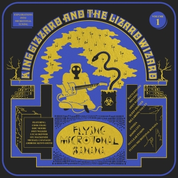

12-TET tuning was by and large universal during the Classical period. However, many classical-style pieces have been composed using tunings like 24-TET. This is often done by taking two pianos, tuning one to be 50 cents higher or lower than the other, and playing them both simultaneously. Take the following piece, written in 1946-47 by Alois Hába, for example:
The advent of electronic instruments has allowed for much more complex microtonality to be experimented with. This includes crazy tunings like 313-TET - that's three-hundred thirteen notes in a single octave! This tuning was used in Sevish's Desert Island Rain, the track found on the home page.
Another musician experimenting with microtones in electronic music is Dolores Catherino. Below you can see her using a custom-built electronic instrument that can play in 106-TET:
Several rock bands have experimented with microtonality. For example, Radiohead included microtonal strings in their song, How to Disappear Completely.
One band in particular - King Gizzard and the Lizard Wizard, a psychedelic rock band from Australia - created a whole concept album based on microtonality, called Flying Microtonal Banana.
This album, released in early 2017, featured modified instruments that allowed for quarter tones to be played. For the most part, this involved adding extra frets to their guitars and bass, but they also specifically bought a microtonal harmonica, as well as a zurna. The drums were even tuned to match the 24-TET nature of the other instruments.
An excerpt from the song "Sleep Drifter."
Besides electronic instruments like Dolores Catherino's, several attempts have been made to "microtone-ize" instruments like the guitar. As stated earlier, adding extra frets to a guitar or bass will allow it to play notes in-between the semitones it was originally made to play. Fretless instruments, like most stringed instruments and fretless guitars/basses, can inherently produce microtones if desired.
One interesting invention is a guitar with individually sliding frets. Designed by Tolgahan Çoğulu in 2008, each fret is actually divided into eight parts, one for each string. Each part can be moved independently of one another. The following video is in Croatian, but the visuals themselves do a good job of showing how the instrument works: